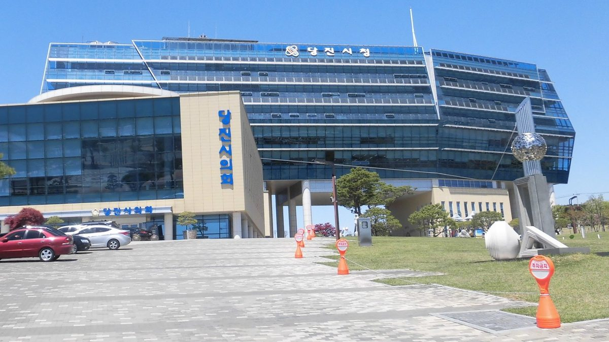

당진시에너지센터, 교육·조사·상담으로 시민 곁의 에너지전환 다진다

2019년 210개 마을·발전사업자 500여 명 대면조사, 태양광 상담 108건
2019년 석문면에 문을 연 당진시에너지센터가 마을 조사와 주민 상담, 에너지 교육을 이어 가고 있다. 석탄화력발전소 1~10호기가 가동 중인 당진에서 센터는 홍보·교육, 연구·조사, 에너지 복지, 네트워크, 재생에너지사업 지원을 맡고 있으며, 시민강사와 시민조사원을 길러 마을 리더와 학생을 직접 찾아간다. 2019년에는 210개 마을과 발전사업자 500여 명을 만나 설문했고, 태양광 설치를 원하는 주민 상담 108건을 하며 인허가 안내와 사기 피해 예방, 주민과 사업자 사이 갈등 중재를 했다. 2020년에는 취약계층 주택 LED 교체·미니태양광·단열 지원과 공모형 주민주도 에너지 선도마을 조성을 계획했다. 이인수 센터장은 에너지센터 같은 중간조직을 법으로 뒷받침해 전국으로 넓혀야 한다고 말했다.
시민에너지 관점
당진시에너지센터는 2019년 한 해에만 210개 마을과 발전사업자 500여 명을 직접 만나고 주민 상담 108건을 했다. 주민이 사업을 맡기엔 전문성이 모자란다는 우려가 늘 따르지만, 이 사례는 그 빈자리를 외부 업체가 아니라 지역의 공공 중간조직이 채울 수 있음을 보여 주는 것으로 보인다. 주민이 사업의 주인이 되려면 돈보다 먼저 절차와 계약을 함께 읽어 줄 가까운 지원 체계가 필요하다. 햇빛소득마을이 전국으로 넓어지는 지금, 시·군마다 이런 지원 조직을 갖추는 일부터 서둘러야 할 것이다.
출처: 당진시대 2020-02-17 임아연 원문 보기
창간 전 시험 발행 기사입니다.
唐津市能源中心以教育、调查和咨询夯实市民身边的能源转型
2019年走访210个村庄和500余名发电业者，提供太阳能咨询108件
2019年在石门面开设的唐津市能源中心持续开展村庄调查、居民咨询和能源教育。在燃煤电厂1至10号机组仍在运行的韩国忠清南道唐津，该中心负责宣传教育、研究调查、能源福利、网络建设和可再生能源项目支持，并培养市民讲师和市民调查员，直接走进村庄领袖和学生当中。2019年，中心走访210个村庄和500余名发电业者开展问卷调查，并为希望安装太阳能的居民提供108件咨询，内容包括许可程序指引、防范诈骗以及调解居民与业者之间的矛盾。2020年，中心计划支持弱势家庭更换LED灯、安装迷你太阳能和保温施工，并通过公开征集培育居民主导的能源示范村。中心主任 Lee In-su 表示，应通过立法支持能源中心这类中间组织，并推广到全国。
市民能源视角
仅2019年一年，唐津市能源中心就直接走访了210个村庄和500余名发电业者，并提供了108件居民咨询。人们常担心居民缺乏承担项目的专业能力，而这一案例似乎表明，填补这一空缺的可以不是外部企业，而是地方的公共中间组织。居民要成为项目的主人，首先需要的不是资金，而是身边能一起看懂程序和合同的支持体系。在阳光收入村向全国推广的今天，各市郡应尽快建立这样的支持组织。
来源: 唐津时代 2020-02-17 Lim A-yeon 查看原文
本文为创刊前试发行文章。
Dangjin Energy Center builds the energy transition close to residents through education, surveys and advice
Face-to-face surveys of 210 villages and some 500 power producers in 2019, plus 108 solar consultations
The Dangjin City Energy Center, which opened in Seongmun-myeon in 2019, has been carrying out village surveys, resident consultations and energy education. In Dangjin, South Chungcheong Province, where coal-fired units 1 to 10 are in operation, the center handles outreach and education, research and surveys, energy welfare, networking and support for renewable projects, training citizen instructors and surveyors who go out to village leaders and students. In 2019 it surveyed 210 villages and some 500 power producers in person, and gave 108 consultations to residents interested in solar, explaining permits, helping prevent fraud and mediating disputes between residents and developers. For 2020 it planned LED, mini-solar and insulation support for low-income homes and a competition to create resident-led model energy villages. Director Lee In-su said intermediary bodies such as energy centers should be backed by law and spread nationwide.
Citizen Energy View
In 2019 alone, the Dangjin center met 210 villages and some 500 power producers in person and handled 108 resident consultations. The usual worry is that residents lack the expertise to run projects, but this case appears to show that the gap can be filled by a local public intermediary rather than outside companies. For residents to own projects, what they need before money is a nearby support system that can read procedures and contracts with them. With Sunlight Income Villages spreading nationwide, every city and county should move quickly to set up such support bodies.
Source: Dangjin Sidae 2020-02-17 Lim A-yeon Read the original
This article was published during the trial period before launch.